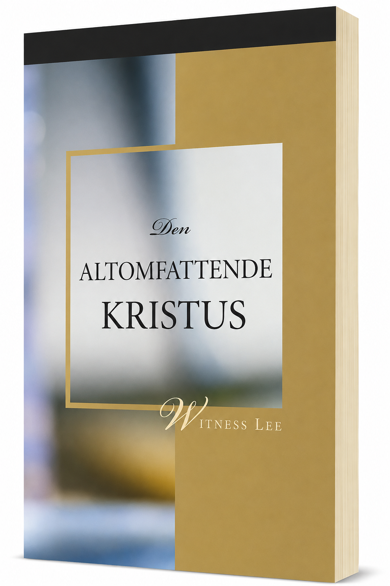

Gratis kristne bøker
Syv gratis kristne bøker tilgjengelig for personlig studium og studiegrupper.
Sett 1
-
Det kristne livets grunnleggende prinsipper, Volum 1
Om Guds plan for mennesket og fire grunnleggende kristne erfaringer.
Les boken -
Det kristne livets grunnleggende prinsipper, Volum 2
Om et personlig forhold til Gud og det å tilbringe tid med Herren.
Les boken -
Det kristne livets grunnleggende prinsipper, Volum 3
Om forskjellen mellom å leve etter rett og galt og å leve etter «livets prinsipp».
Les boken
Sett 2
-

Den Altomfattende Kristus
En utleggelse av Femte Mosebok hvor Kanaans gode land brukes som bilde på Kristus og den troendes erfaring av ham.
Les boken -
Guds økonomi
Om Guds evige hensikt og menneskets plass og deltakelse i denne hensikten.
Les boken
Sett 3
-
Kunnskapen om liv
Om hva åndelig liv er, hvor det kommer fra og hvordan den kristne vokser i livet.
Les boken -

Den herlige menigheten
Om hvordan Bibelen fremstiller menigheten og fire bibelske bilder som beskriver den.
Åpne studiet